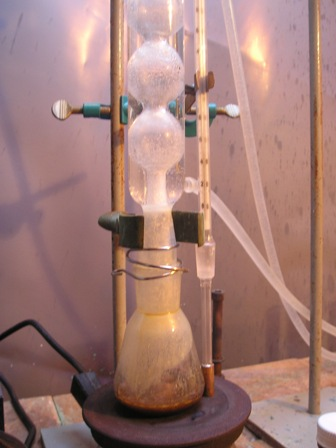
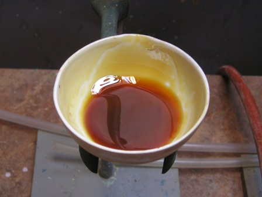

Se è vero che non tutte le ciambelle riescono col buco, altrettanto si può dire che non tutte le sintesi... riescono!
Se prima di giocare con i reagenti si son fatti bene tutti i conti (intendo: ci si è ben documentati su quello che si va a fare) questo fatto increscioso succede raramente, ma purtroppo qualche volta succede, e anch'esso va debitamente documentato.
La tentata (anzi, fallita...) sintesi di cui vado a parlare è una di queste.
Ho voluto comunque provare, in verità con non molte speranze già in partenza data la scarsissima bibliografia di appoggio, ad esterificare secondo Fischer l'acido cinnamico con l'alcool benzilico, solo un po' confortato dal classico Villavecchia Eigenmann, che dava come metodo possibile l'esterificazione diretta.

Ho cercato di fare tutto come si deve (grande eccesso di uno dei componenti, temperatura controllata, tempo ab abundantiam, ecc.), ottenendo però alla fine, dopo l'estrazione con etere, un prodotto resinoso marroncino, estremamente appicicaticcio e fastidioso, di odore balsamico ma nemmeno lontanamente cristallizzabile e men che meno degno di prendere il nome di cinnamato di benzile.Inutile pensarci tanto: --> via tutto in discarica!
Morale: oltre alla mezza giornata sprecata, acetone a non finire e solventi di ogni tipo per tentare di lavare la vetreria: una rogna così non mi è mai capitata per eliminare i tenacissimi residui da ogni oggetto con cui il terribile prodotto era stato in contatto!
Inoltre grammi di preziosi acido cinnamico e alcool benzilico buttati alle ortiche.
Resta di positivo sicuramente un po' di esperienza in più e la conferma che il benzilcinnamato ha odore balsamico, pesante e dolciastro e non certo fruttato come era stato erroneamente suggerito e che volevo andar a verificare.

Qualcuno vuole tentare questa sintesi per altra via, meno diretta ma più sicura?
So che i possibili candidati non saranno moltissimi (...!), ma lancio comunque questa sfida verso "l'ignoto"...
1 commenti